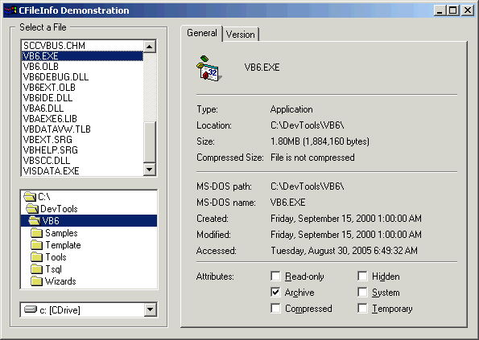
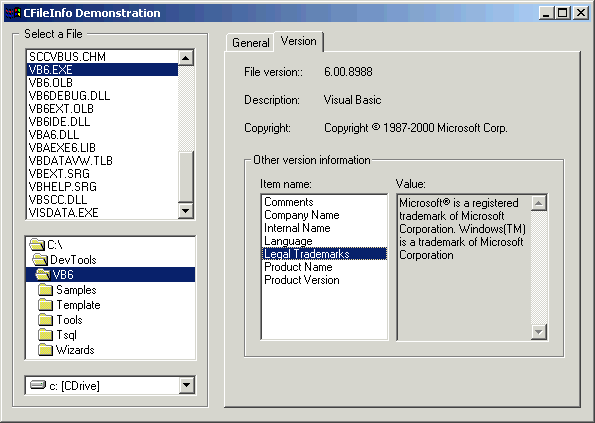

Description
This sample recreates the first two tabs of the standard File Properties
dialog, and provides you with two drop-in ready classes that offer access to
almost all standard properties of any file. The main CFileInfo class serves up
everything needed to populate this display:

With CFileInfo, you can:
- Categorize files through their TypeName property ("Application"
above).
- Determine not only the Modified timestamp, but the Created and Last
Accessed timestamps as well.
- Set any of the three timestamps to any date/time you specify.
- Present file sizes in Windows universal format using standard
abbreviations and calculated sizes.
- Toggle any of the file's file system attributes, without fear blowing a
SetAttr error when working with newer operating systems.
- Instantly know (FAQ alert!) whether a file or its path actually exists.
- Convert any path, even relative paths, to propercase through a recursive
routine that queries the file system for each folder individually.
Also included in this sample is my CFileVersionInfo class, which provides you
immediate access to all the standard version resources offered in this dialog:

Either class may be used fully independent of the other, of course.
VBA Usage Notes
Both of these classes will work, wholly unmodified, within all known versions
of VBA. Just import them right into your project, and begin using! Example:
Dim FV As CFileVersionInfo
' get version information.
Set FV = New CFileVersionInfo
FV.FullPathName = FileName
If FV.Available Then
sRet = "Version " & FV.ProductVersion
Else
sRet = "Version [n/a]"
End If
Useful Stuff That Might Go Unnoticed
It's not uncommon to need to convert time/date formats between those used by
VB and those used by Windows. Included in CFileInfo are two special purpose
routines you might want to use elsewhere as well.
 |
' API structures.
Private Type FILETIME
dwLowDateTime As Long
dwHighDateTime As Long
End Type
Private Type SYSTEMTIME
wYear As Integer
wMonth As Integer
wDayOfWeek As Integer
wDay As Integer
wHour As Integer
wMinute As Integer
wSecond As Integer
wMilliseconds As Integer
End Type
Private Function DoubleToFileTime( _
ByVal ftDbl As Double, _
Optional Universalize As Boolean = True) As FILETIME
Dim ft As FILETIME
Dim st As SYSTEMTIME
' Convert double to systemtime structure.
With st
.wYear = Year(ftDbl)
.wMonth = Month(ftDbl)
.wDay = Day(ftDbl)
.wDayOfWeek = WeekDay(ftDbl) - 1
.wHour = Hour(ftDbl)
.wMinute = Minute(ftDbl)
.wSecond = Second(ftDbl)
End With
' Convert systemtime to filetime structure.
Call SystemTimeToFileTime(st, ft)
' Convert local time to UTC time, if requested.
If Universalize Then
Call LocalFileTimeToFileTime(ft, DoubleToFileTime)
Else
DoubleToFileTime = ft
End If
End Function
Private Function FileTimeToDouble( _
ftUTC As FILETIME, _
Localize As Boolean) As Double
Dim ft As FILETIME
Dim st As SYSTEMTIME
' Convert to local filetime, if necessary.
If Localize Then
Call FileTimeToLocalFileTime(ftUTC, ft)
Else
ft = ftUTC
End If
' Convert to system time structure.
Call FileTimeToSystemTime(ft, st)
' Convert to VB-style date (double).
FileTimeToDouble = DateSerial(st.wYear, st.wMonth, st.wDay) + _
TimeSerial(st.wHour, st.wMinute, st.wSecond)
End Function
You were aware that VB stores Date data, internally, as a Double, right? Some
of us can't get out of the habit, still, of using it like that too.
Published
This sample, or the one from which it originally derived, was published (or at least
peripherally mentioned) in the following article(s):
APIs Usage
This sample uses the following API calls:
| Module |
Library |
Function |
| CFileInfo.cls |
kernel32
shell32
user32 |
CloseHandle
CreateFile
FileTimeToLocalFileTime
FileTimeToSystemTime
FindClose
FindFirstFile
GetCompressedFileSize
GetFullPathName
GetShortPathName
LocalFileTimeToFileTime
SetFileAttributes
SetFileTime
SystemTimeToFileTime
SHGetFileInfo
DestroyIcon |
| CFileVersionInfo.cls |
kernel32
version
|
GetFullPathName
GetSystemDirectory
lstrlen
lstrlen
RtlMoveMemory
VerLanguageName
GetFileVersionInfo
GetFileVersionInfoSize
VerQueryValue |
| FFileInfo.frm |
user32 |
DrawIcon |
Don't see what you're looking for? Here's a
complete API cross-reference.
Download

|
|
Please, enjoy and learn from this sample. Include its code within your own projects, if you wish. But, in order to insure only the most recent code is available to all, I ask that you
don't share the sample by any form of mass distribution.
Download FileInfo.zip,
32Kb, Last Updated: Thursday, July 26, 2001
|
See Also
The following resources may also be of interest:
- DrvInfo - Provides all kinds of information about any drive in the system.
- FileControls - Combines the native file controls into a single-file, easy-to-use, no-dependency UserControl.

|